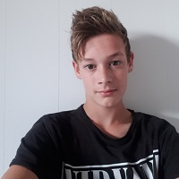

Kort over mezelf
Mijn naam is Vince den Besten, ik ben geboren op 16 juli 2001. Ik woon in Ottoland en ga naar school op het Da Vinci college in Gorinchem en doe daar de opleiding applicatieontwikkelaar, hier hoop ik op mijn achttiende mijn diploma voor te halen. Verder werk bij Verspui, en geef ik gym op 1 avond in de week voor kinderen die op de basisschool zitten.